Changemakers of New India
उदयघोषपुरुष व उदयघोषशक्ति — The Changemakers of NEW Bharat 2026
पूरे भारत से 300 से ज़्यादा changemakers और personalities (Padma Shri awardees सहित) 2026 Founding Edition से जुड़ रहे हैं। 31 episodes की mega documentary series: The Changemakers of NEW Bharat 2026 में उनके संदेश संदेश भारती के 31 boxes में digital रूप में संजोए जा रहे हैं।
Arunachalam Muruganantham
“Padman of India”
Inventor & social entrepreneur · Jayaashree Industries
Invented a low-cost sanitary pad machine and led grassroots awareness of menstrual hygiene in rural India. His machines go to women’s self-help groups, not corporations — each unit becomes a women-run micro-enterprise. His story inspired the film Pad Man.
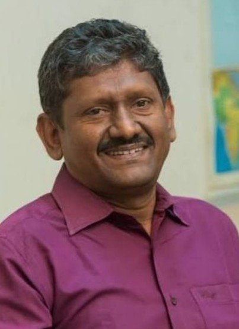
U. Sagayam
“The uncompromising IAS officer”
Retired IAS officer · founder, Makkal Pathai reform trust
A farmer’s son from Perunchunai village whose office door read “Reject bribes, hold your head high.” Transferred again and again for confronting powerful interests, he became “the common man’s collector” and a case study in clean administration for civil-service aspirants.

Supriya Sahu
“UN Champion of the Earth, 2025”
IAS officer & environmentalist · Commissioner, EDII Tamil Nadu
Her years leading Tamil Nadu’s environment portfolio became a national model: new reserve forests and sanctuaries, the “Meendum Manjapai” cloth-bag campaign against plastic, and the Cool Roof Project that cools school classrooms by 5–8°C.

Dr. Punniamurthy Natesan
“Pioneer of ethno-veterinary medicine”
Veterinary pharmacologist · TANUVAS and TDU, Bengaluru
Raised in a farming family in Melamangalam village, he spent four decades turning traditional plant remedies into scientifically validated, low-cost livestock treatments — cutting antibiotic use and protecting small farmers’ incomes. He founded India’s first PG diploma in ethno-veterinary medicine.

Dr. Rajagopalan Vasudevan
“The Plastic Road Man of India”
Dean & Professor of Chemistry · Thiagarajar College of Engineering
Found a simple way to coat hot stone aggregate with shredded waste plastic before adding bitumen — giving roads that are stronger, water-resistant and pothole-free. He patented the method in 2006 and gave it to the Government of India free of royalty.
Dr. Mylswamy Annadurai
“Moon Man of India”
Former Director, ISRO Satellite Centre · Chandrayaan-1 project director
Born in Kothavadi village, Coimbatore district, and trained at Government College of Technology and PSG College of Technology, he spent about 36 years at ISRO. He was project director of Chandrayaan-1, programme director of the Mars Orbiter Mission and later led the ISRO Satellite Centre, Bengaluru. He also writes popular-science books in Tamil.

Dr. Padayal Sivakumar
“Healthiest MasterChef of India”
Raw-food chef & wellness researcher · Padayal Academy
A Coimbatore chef who spent nearly three decades studying traditional diets and naturopathy before pioneering “No Oil, No Boil, No Fire” cooking. His restaurant and academy show that raw, plant-based food, built on native spices, millets and flowers, can be both therapeutic and delicious.
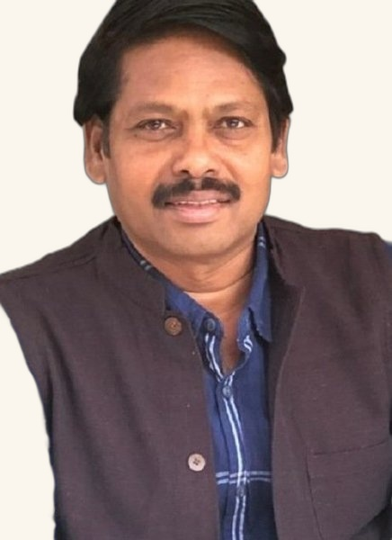
S. Damodaran
“The sanitation pioneer”
Founder · Gramalaya NGO
Shaken in his youth by children forced to relieve themselves in the open, he founded Gramalaya in Tiruchirappalli in 1987. His community-led water and sanitation model made Thandavampatti India’s first 100% open-defecation-free village in 2003, long before Swachh Bharat.
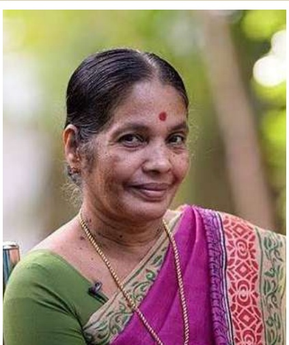
Dr. Tessy Thomas
“Missile Woman of India”
Aerospace scientist · Vice-Chancellor, NICHE, Kanyakumari
The first woman to head a major Indian missile project, she led the Agni-IV and Agni-V programmes at DRDO after early mentorship from Dr. A.P.J. Abdul Kalam, and rose to Director General of Aeronautical Systems. She is a leading inspiration for girls in science.
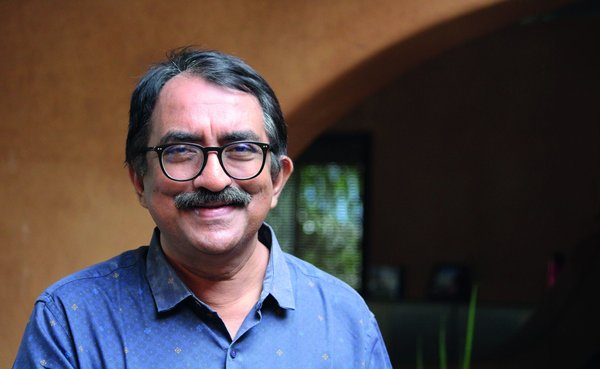
Dr. Ar. G. Shankar
“The People’s Architect”
Founder, Habitat Technology Group · UN consultant
Inspired by Laurie Baker, he left luxury architecture in 1987 to house the poor, building with earth, bamboo and lime. Habitat Technology Group grew into South Asia’s largest NGO in shelter, rebuilding after disasters from the Latur earthquake to the 2004 tsunami.
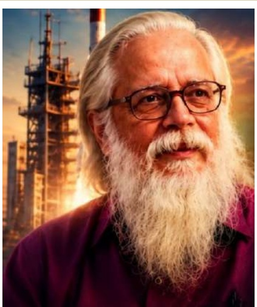
Meenakshi Amma Gurukkal
“Kerala's grand old dame of Kalaripayattu”
Kalaripayattu master · Kadathanadan Kalari Sangham, Vadakara
Trained in Kalaripayattu from childhood, she took over the Vadakara kalari her husband founded in 1949 after his death in 2007. She teaches the northern style, from the stick to the urumi, with free classes and a place for girls.
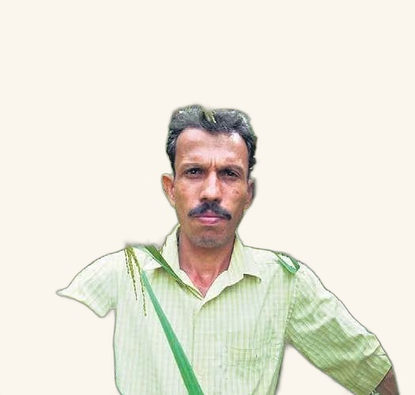
Sathyanarayana Beleri
“Rice Man of India”
Farmer & agro-biodiversity conserver · Nettanige village
From a small sloped farm in Nettanige, he conserves more than 650 indigenous rice varieties in grow bags, a living gene bank gathered from across South and Northeast India. He shares seed freely with farmers to keep endangered grains alive.

Rupesh Kumar K.
“Tourism that pays the village”
CEO · Kerala Responsible Tourism Mission Society
He built Kerala’s community-led Responsible Tourism model, with Village Life Experiences and the PEPPER and STREET projects, so that visitor spending flows straight to village households instead of large operators. It is now cited internationally as a benchmark.

Dr. Sreeraj Gopi
“From a Malayalam-medium school to the global top 2%”
Founder & MD · Molecules Biolabs
From a village in Thrissur and a Malayalam-medium government school, he built Molecules Biolabs, which began in his car, into a ₹ 100 crore biotech company without leaving Kerala. He is a six-time Stanford–Elsevier Top 2% scientist.
Dr. Shubha Venkatesha Iyengar
“Architect of Safer Flight”
Former Distinguished Scientist, CSIR-National Aerospace Laboratories
Over 46 years at CSIR-NAL she built Drishti — India’s first indigenous runway visibility system — replacing costly imports and keeping flights safe through winter fog. She also contributed to the Agni missile and Ramjet–Scramjet engine programmes.
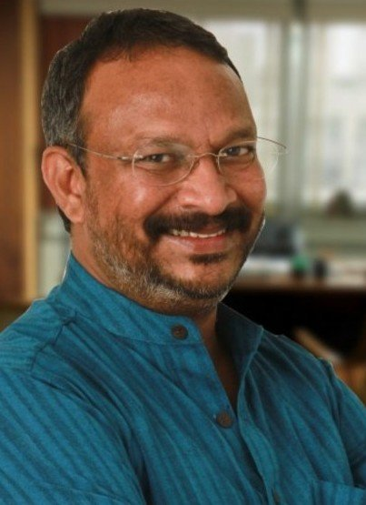
Bezwada Wilson
“Leading the fight to end manual scavenging”
National Convenor, Safai Karmachari Andolan
Born in the Kolar Gold Fields into a community trapped in manual scavenging, he co-founded the Safai Karmachari Andolan in 1994 to end it. His 2003 petition led to the 2014 Supreme Court ruling on rehabilitation and compensation for sewer deaths.
Anand Malligavad
“Lake Man of India”
Water conservationist · Founder, Malligavad Foundation
A mechanical engineer who left his corporate job to revive Bengaluru’s dying lakes with Chola-era methods — no chemicals, no heavy machinery. His first project, the 36-acre Kyalasanahalli Lake, came back to life in 45 days in 2017.

Dr. Devi Prasad Shetty
“The heart surgeon who made care affordable”
Founder, Narayana Health
Born in Kinnigoli in Dakshina Kannada, he founded Narayana Hrudayalaya in 2001 and built it into a network of hospitals known for low-cost heart surgery. He has performed more than 15,000 heart surgeries. He also designed the Yeshasvini health insurance scheme for farmers in Karnataka.
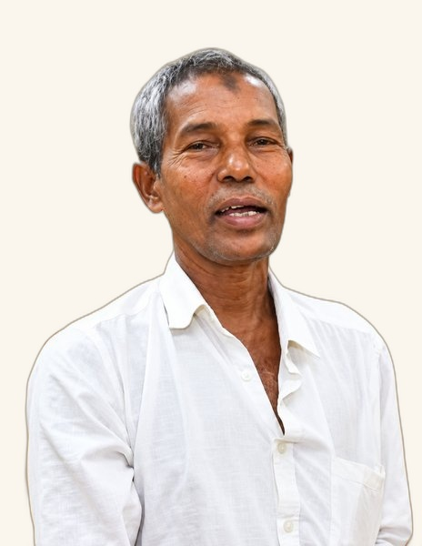
Harekala Hajabba
“The fruit seller who built a school”
Founder, Hajabba School, Newpadapu, Dakshina Kannada
An orange seller from Harekala near Mangaluru who never went to school himself, he saved from his small earnings to start a school in his village of Newpadapu so that the children there could study. His quiet service drew national attention and a Padma Shri.

Dr. Geetha Manjunath
“AI against breast cancer”
Founder & CEO · NIRAMAI Health Analytix
A computer scientist with a PhD from IISc (CSI Gold Medal) and 25+ years at Xerox and HP Labs, she founded NIRAMAI to make early breast-cancer screening radiation-free, non-invasive and affordable using artificial intelligence and thermal imaging.

Capt. G. R. Gopinath
“Making flying affordable for every Indian”
Founder · Air Deccan · Author, Simply Fly
Born in Gorur, Hassan district, he served in the Indian Army and retired as a Captain at 28, then became a farmer and entrepreneur. In 2003 he launched Air Deccan, India’s first low-cost airline, and put air travel within reach of first-time flyers.

Pawan Kumar Chandana
“India’s Elon Musk”
Co-founder & CEO, Skyroot Aerospace
An IIT Kharagpur graduate and former ISRO scientist who worked on the GSLV Mk-III, he left in 2018 to co-found Skyroot. In November 2022 its Vikram-S became India’s first privately built rocket to reach space, opening the country’s launch sector to private firms.

Mithali Raj
“The run-machine who led India's women for 18 years”
Former India captain
Born in Jodhpur and based in Hyderabad, she captained India from 2004 to 2022. In July 2021 she passed Charlotte Edwards' record to become the highest run-scorer in women's international cricket, with 10,868 runs. She led India to the World Cup final in 2005 and 2017 and retired on 8 June 2022.

Dr. D. Nageshwar Reddy
“Pioneer of advanced endoscopy in India”
Founder & Chairman, AIG Hospitals, Hyderabad
Born in Visakhapatnam in 1956, he founded the Asian Institute of Gastroenterology in Hyderabad in 1994. He has published over 1,000 peer-reviewed papers and trained generations of endoscopists. He has received global honours, including the ASGE Master Endoscopist Award and the World Endoscopy Organisation award.
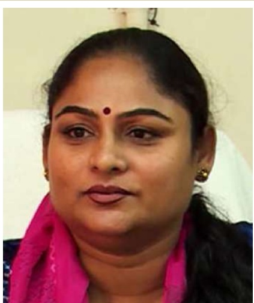
Chintakindi Mallesham
“The weaver who invented the Laxmi ASU machine”
Inventor, Pochampally handloom · Subject of the film Mallesham (2019)
Born in Sharajpet village, a weaver from the Pochampally belt, he invented the Laxmi ASU machine to spare weavers, mostly women, the tiring manual winding of silk threads. The machine cut the cycle time from around six hours to about 90 minutes. His story was told in the 2019 film Mallesham.
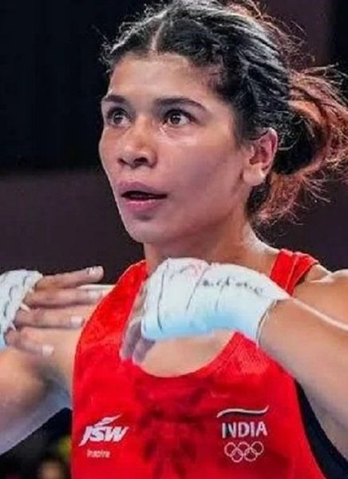
Nikhat Zareen
“Two-time World Boxing Champion”
Boxer · Nizamabad, Telangana
Born in Nizamabad in 1996, she became World Champion in 2022 in Istanbul at 52 kg. She repeated the feat in 2023 in New Delhi at 50 kg and won the 2022 Commonwealth Games gold in Birmingham. She also took bronze at the Hangzhou Asian Games and competed at the Paris 2024 Olympics.
Karnam Malleswari
“India's first woman Olympic medallist”
Sydney 2000 bronze medallist · Vice-Chancellor, Delhi Sports University
Born in Voosavanipeta in Srikakulam district, she won bronze in the 69 kg category at Sydney 2000 with a total lift of 240 kg (110 kg snatch, 130 kg clean and jerk). She was also World Champion in 1994 and 1995. She became Vice-Chancellor of the Delhi Sports University in June 2021.

C. V. Raju
“Revived Etikoppaka lacquer toys with natural dyes”
Artisan-innovator, Etikoppaka, Anakapalle district
Born in Jonnavalsa village in Vizianagaram district, he revived the Etikoppaka toy craft in 1988 after its popularity declined. He developed more than 12 vegetable-based dyes and methods to extend their shelf life. He started Padmavati Associates, an artisans' cooperative, and now 160 artisans make the toys.
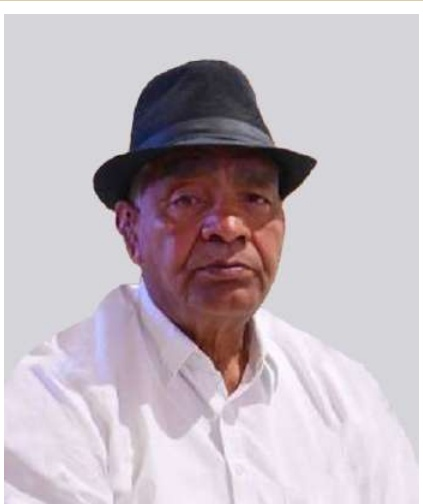
Dr. Jayshree Vencatesan
“The Wetland Saviour”
Ecologist · Co-founder, Care Earth Trust
Raised on the Godavari in Rajahmundry, she began her wetland work with a ₹ 32,000 grant and mapped Chennai’s Pallikaranai Marsh by moped and compass. Her field data helped win reserve-forest status for the marsh, and in 2025 she became the first Indian to receive the Ramsar Wetland Wise Use Award.

S. D. Shibulal
“Infosys co-founder who rose to lead it”
Co-founder, Infosys · Co-founder, Axilor Ventures
Born in Alappuzha and educated at Maharaja's College, Ernakulam, he was one of the seven founders of Infosys in 1981. He served as CEO and Managing Director from 2011 to 2014, then co-founded Axilor Ventures to back young Indian startups.
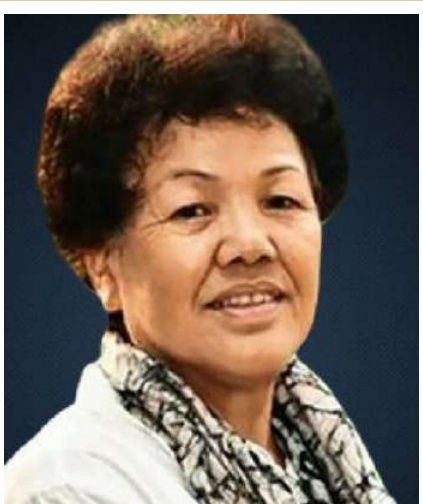
Dr. R. V. Ramani
“The Man Who Brought Light to Millions”
Founder & Managing Trustee · Sankara Eye Foundation India
In 1977 he and his wife, Dr. Radha Ramani, opened a small low-cost clinic in Coimbatore. In 1985 they made eye care their mission and began the Sankara Movement, whose 80:20 model — paying patients fund free surgery for the poor — grew into one of the world’s largest free eye-surgery programmes.

Dr. S. Nambi Narayanan
“Pioneer of India’s liquid fuel rocket engines”
Aerospace engineer · former ISRO scientist
He joined India’s Thumba rocket station in 1966 and, after a NASA fellowship at Princeton, persuaded ISRO to adopt liquid propulsion. His work led to the Vikas engine that powers the PSLV, GSLV and LVM3 launchers behind missions from Mangalyaan to Chandrayaan.
Pullela Gopichand
“The coach behind India's Olympic badminton medals”
Chief National Coach · Founder, Gopichand Badminton Academy
Born near Chirala in Prakasam district, he won the All England Open in 2001. He founded the Gopichand Badminton Academy in Hyderabad in 2008, which has produced Olympic medallists Saina Nehwal (bronze, London 2012) and P. V. Sindhu (silver, Rio 2016; bronze, Tokyo 2020).
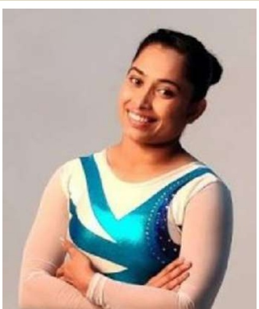
Jyothi Yarraji
“India's fastest woman in 100m Hurdles”
National record holder, 100 m hurdles
Born in Visakhapatnam in 1999, she holds the national record of 12.78 seconds in the 100 m hurdles. She won gold at the Asian Championships in 2023 in Bangkok and again in 2025 in Gumi, plus silver in the 100 m hurdles at the Hangzhou Asian Games. She represented India at the Paris 2024 Olympics.
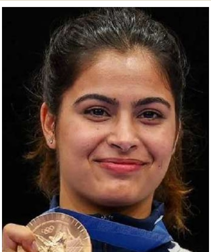
Namratha Mohan
“India’s Temple Girl”
Founder & digital heritage archivist · The Temple Girl
A former finance leader at Amazon Prime Video, Disney and JP Morgan, she left corporate life in 2024 to document India’s temples. Her platform and Temple Girl Kids app turn architecture, ritual and sacred science into stories for young Indians.
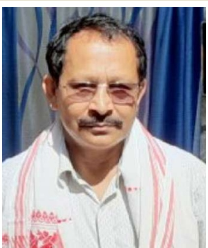
Komera Anka Rao
“The Andhra Forest Man”
Conservationist · Special Advisor, Forest & Environment Department
A self-taught conservationist from Karempudi, Palnadu, he began entering the Nallamala forest as a teenager and has spent over two decades clearing tourist waste, fighting summer fires and teaching schoolchildren to protect the forest.

Dr. R. A. Mashelkar
“Patent King of India”
Chemical engineer & former Director-General, CSIR
Born in Goa in 1943, he served as Director-General of the Council of Scientific and Industrial Research for over eleven years. Under him CSIR challenged the US patents on turmeric and basmati rice, and its share of US patents granted to India reached 40% in 2002. He chaired the National Innovation Foundation from 2000 to 2018.

Jayanti Buruda
“India’s 1st Tribal Woman Journalist”
Founder, Jungle Rani · Bada Didi Union
Koya tribal journalist from Malkangiri who broke taboos to report from ground zero, founded the women-led digital platform Jungle Rani and is raising 15 abandoned girls as a single mother.

Dr. Mahendra Kumar Mishra
“Visionary linguist, folklorist & educationist”
Language and Learning Foundation · Former State Coordinator for MLE, Odisha
Pioneered mother-tongue-based multilingual education in Odisha, building primers in 10 tribal languages and archiving oral epics, myths and songs of Vanvasi communities.
Madhusudan Dash (IAS)
“The collector who made Nuapada plastic-free”
IAS · Collector & District Magistrate, Nuapada
Led Nuapada to become Odisha’s first single-use-plastic-free district through 700+ community drives, 3,200+ garbage points cleared and 500 green buffer zones.

Katulu Ravi Kumar
“Commonwealth Games Gold Medallist”
DSP, Odisha Police · Secretary, Odisha Weightlifting Association
From a rustic Berhampur akhada to Commonwealth gold in the 69 kg class and the London Olympics — now a police DSP mentoring young lifters across Odisha.

Dr. Arabinda Kumar Padhee
“The ‘Millet Man’ of Odisha”
IAS · Additional Chief Secretary, Government of Odisha
Architect of the Odisha Millets Mission, turning drought-prone tribal districts into a global model of climate-resilient, women-led, nutrition-first agriculture.
Sudarsan Pattnaik
“Master of Sand Art”
Sand artist · Founder, Sudarsan Sand Art Institute, Puri
Born in Puri, he turned the beach into a global art stage, taking his sand sculptures on social and environmental themes to festivals across the world. He founded the Sudarsan Sand Art Institute in 1994 and received the Padma Shri in 2014.
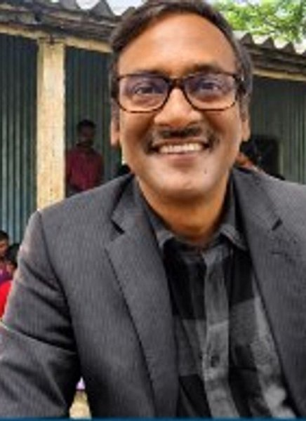
Prof. (Dr.) Satadal Saha
“Pioneer of the 3T Model”
Founder & President, Foundation for Innovations in Health
Surgeon-turned-social-entrepreneur whose Training–Technology–Task-shifting model turns village youth into frontline health workers and brings primary care to the doorstep.
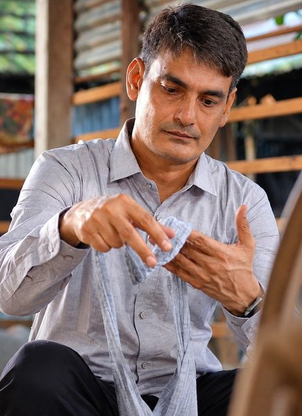
Gaurav Anand
“Turning Bengal’s “Terror” Weed into Handloom”
Founder · Swachhata Pukary Foundation
Left a corporate career to tackle the water hyacinth, creating hyacinth–cotton fusion sarees with Shantipur weavers and steady incomes for rural women artisans.
Umashankar Mandal
“The “Mangrove Man of Sundarbans”
Primary School Geography Teacher · Satjelia Island, Gosaba
Built a community seed-to-sapling pipeline with local women and schoolchildren to plant mangrove bio-shields on cyclone-hit riverbanks of the Sundarbans.

Tarundeep Rai
“4-Time Olympian from Sikkim”
Subedar Major, Indian Army
Kirati archer from Namchi who put Sikkim on the global archery map, came back from a career-threatening shoulder injury and now mentors India’s next archers.

Bhaichung Bhutia
“The “Sikkimese Sniper”
Former India Captain · Founder, Football Schools
Torchbearer of Indian football from Tinkitam, Sikkim, who led India to SAFF, Nehru Cup and AFC Challenge Cup titles and now builds young talent through football schools.
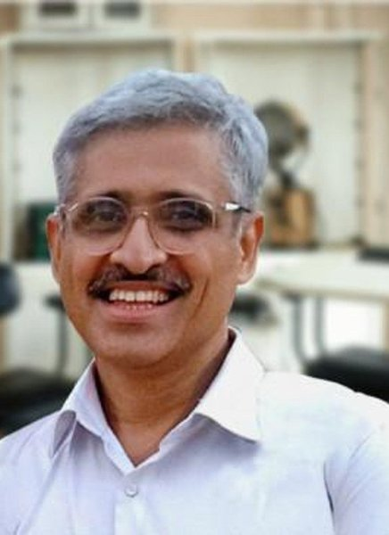
Dr. R. Ravi Kannan
“Ramon Magsaysay Awardee 2023”
Director, Cachar Cancer Hospital & Research Centre
Left a Chennai career in 2007 to rebuild a 20-bed clinic into a regional cancer centre with free food, lodging and pro-poor care so patients don’t drop out of treatment.
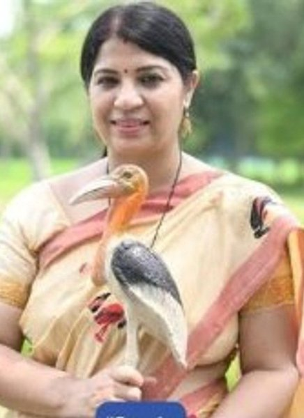
Purnima Devi Barman
“Hargila Baido ” — the Stork Sister”
Wildlife Biologist, Aaranyak · Founder, Hargila Army
Wildlife biologist who turned a persecuted scavenger bird into a cultural icon, building an all-women army that quadrupled Assam’s greater adjutant stork population.
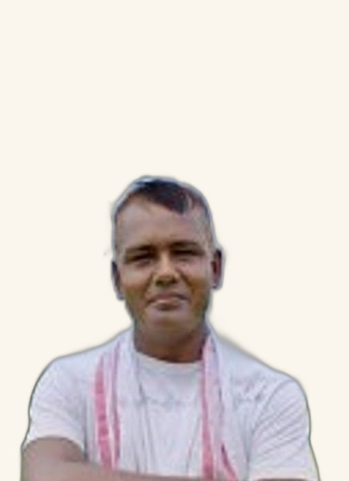
Mahan Chandra Borah
“The Rice Library Creator”
Founder, Annapurna Rice Library
Organic farmer who turned ancestral land into a living seed bank, lending heirloom paddy — including flood-tolerant Bao dhan — free to smallholder farmers.
Jahnabi Goswami
“The Iron Lady of Public Health”
Founder, Assam Network of Positive People (ANP+)
Turned personal tragedy into a movement — founding ANP+ and the Kasturi Children Care Home to bring treatment, dignity and school access to people living with HIV.
Rima Das
“The one-woman-army filmmaker”
Founder, Flying River Films
Self-taught independent filmmaker, writer, producer and cinematographer from Kalardiya village near Chhaygaon, Assam, with a Master’s in Sociology from Pune University.
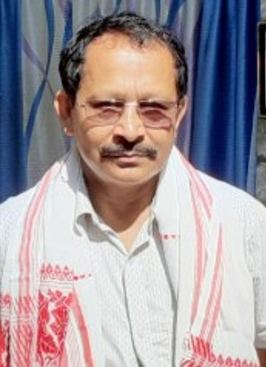
Uddhab Bharali
“Assam’s Real-Life Phunsukh Wangdu”
Founder, UKB Innovations
Mechanical engineer who builds affordable machines for farmers, weavers and people with disabilities — from the world’s first pomegranate de-seeder to tea-leaf pluckers.
Jahnabi Phookan
“Put Assam’s wild silks on the world stage”
Founder, Lahé Looms · Jungle Travels India
For over three decades she has built enterprises rooted in the region’s rivers, forests and wild silks, refusing the narrative of geographic isolation.
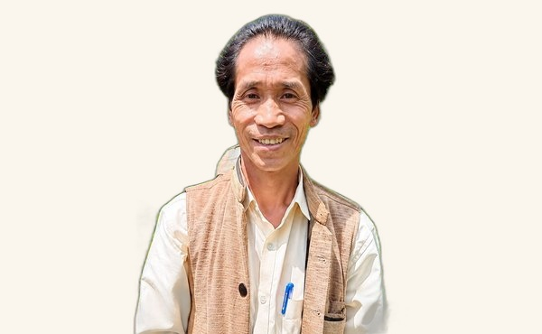
L. Hangthing
“The Fruit Man of Noklak”
Progressive farmer · Jungyam Nursery & Horticulture Farming Society
Progressive farmer from Noklak, Nagaland, who turned the rugged, high-altitude terrain of India’s easternmost border district into a thriving horticultural hub.
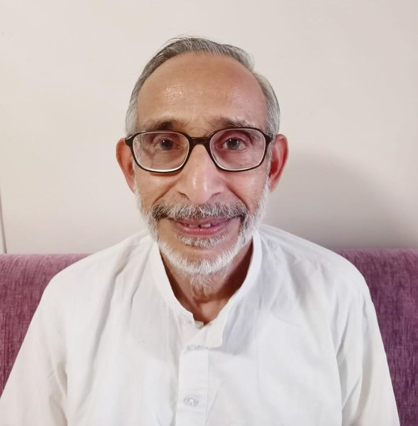
Sathyanarayan Mundayoor
“‘Uncle Moosa ’, the library man of Lohit”
Educationalist & literacy activist · Lohit Youth Library Network
Kerala-born educationalist and literacy activist, fondly known across Northeast India as “Uncle Moosa”, who built the Lohit Youth Library Network.
Dipa Karmakar
“Pioneer of Indian Gymnastics”
Gymnastics Federation of India · Netaji Subhash Regional Coaching Centre
India’s most celebrated artistic gymnast — the first Indian woman gymnast at the Olympics, who overcame flat feet and rudimentary facilities in Agartala to finish 4th in the Rio 2016 vault final.
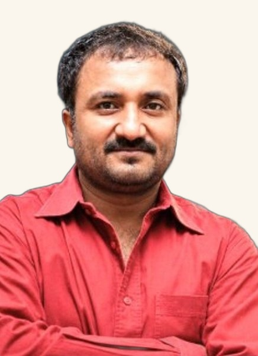
Anand Kumar
“Founder of Super 30”
Ramanujan School of Mathematics
Mathematician from a postal clerk’s family who turned a ₹300-a-month classroom into Super 30, a free programme that coaches underprivileged students for IIT-JEE.
Tarun Kumar
“The “ Padman of Jharkhand”
Founder & Director · Nischay Foundation
Works to end menstrual taboos and period poverty in the Kolhan region and turned Dhatkidih village into a menstrual-waste-free model.
Deepak Nabam
“Founder of Deepak Nabam Living Home”
Social Worker · Founder & Chairman, DNLH
Since 2005 has run free rehabilitation homes at Itanagar and Doimukh for the mentally ill, disabled, elderly and destitute; praised by the Prime Minister in Mann Ki Baat.
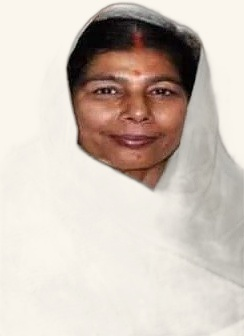
Santosh Yadav
“First Woman to Climb Everest Twice”
Mountaineer · Former Officer, Indo-Tibetan Border Police
Rewari-born mountaineer who summited Everest in 1992 and again in 1993, becoming the first woman to do it twice, and later an environmental campaigner.
Dr. Manoj Kumar
“Bred India’s first makhana variety”
Senior Scientist · ICAR–National Research Centre for Makhana, Darbhanga
Agricultural Research Service senior scientist at the ICAR-National Research Centre for Makhana, Darbhanga, who bred India’s first makhana variety.
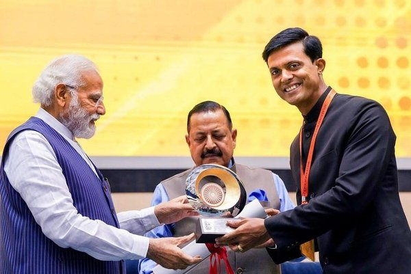
Sushant Gaurav
“The collector behind Gumla’s Ragi Revolution”
IAS (2014 batch) · Deputy Commissioner, Gumla
2014-batch IAS officer of the Jharkhand cadre and BIT Mesra alumnus, who led Gumla’s ragi revolution as Deputy Commissioner.
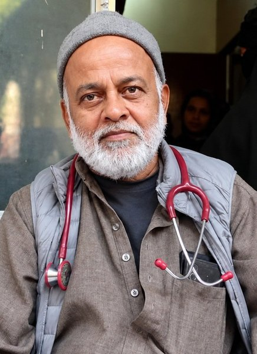
Dr. Ejaz Ali
“The Rs 10 Doctor”
General surgeon · Former Rajya Sabha MP, Patna
A general surgeon who has practised in Patna since 1984, he has charged just Rs 10 for a consultation for about three decades. He sees over 100 patients a day, lets patients pay surgery fees in instalments and sometimes waives them. He also campaigns for Dalit Muslims.
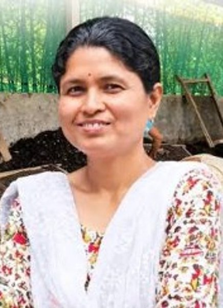
Kanika Talukdar
“The Vermicompost Queen”
Founder, Jayatu Organic Products LLP
Widowed with a four-month-old, she started a backyard vermicompost unit with ₹500 and built a GeM-listed organic enterprise that trains women across Assam.
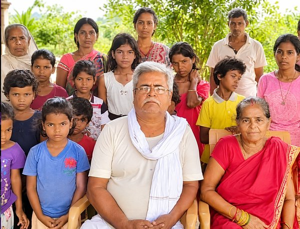
Hare Ram Pandey
“The father of 35 abandoned daughters”
Founder · Narayan Seva Ashram Trust, Deoghar
A social worker from Deoghar who, after rescuing an abandoned newborn girl, resolved that no child in his town would be left to die. With his wife Bhavani Kumari he founded the Narayan Seva Ashram, which has raised, fed and educated more than 35 abandoned children as his own.
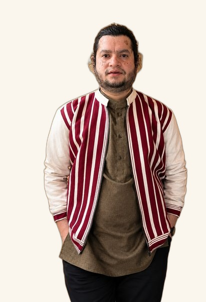
Ashish Satyavrat Sahu
“Dressing Jharkhand’s tribal weaves for the world”
Founder & Principal Designer · Johargram
A fashion designer, social entrepreneur and cultural advocate known for reviving Jharkhand’s indigenous handloom traditions through contemporary, sustainable fashion — bringing Sohrai wall art and tribal weaves to modern wardrobes.
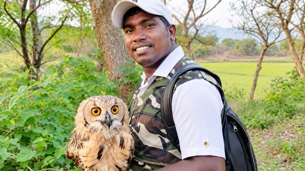
Pannalal Mahto
“The Birdman of Jharkhand”
Farmer & self-taught ornithologist · Saraiya Kundru, Ramgarh
A farmer, self-taught ornithologist and wildlife conservationist from the village of Saraiya Kundru in Ramgarh district, he turned his village into a sparrow sanctuary and runs a one-man rescue service for injured birds.
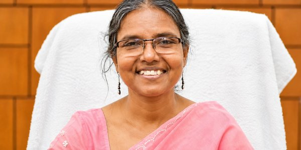
Prof. Sonajharia Minz
“India’s first tribal UNESCO Co-Chair”
Professor, JNU · Former Vice-Chancellor, Sido Kanhu Murmu University
A mathematician, computer scientist and global indigenous-rights advocate from the Oraon Adivasi community of Gumla, Jharkhand. The eldest daughter of social thinker Dr. Nirmal Minz, she became the first tribal woman to serve as a university Vice-Chancellor.
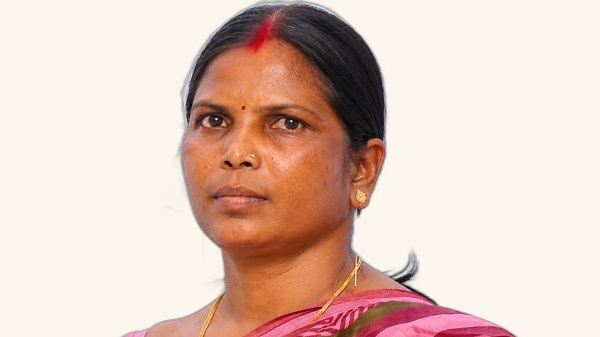
Jamuna Tudu
“The Lady Tarzan of Jharkhand”
Founder · Van Suraksha Samiti, Mutukuria
A grassroots environmentalist and forest protector who earned the name “Lady Tarzan” for her fearless stand against timber mafias, poachers and land grabbers. Born into a tribal family in rural Odisha, she has mobilised tens of thousands of women to guard Jharkhand’s forests.
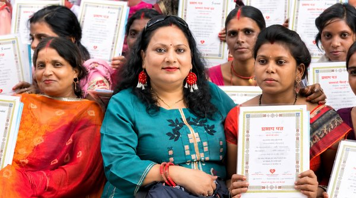
Anita Gupta
“The Silai School founder empowering rural women”
Social entrepreneur · Silai Schools, Bhojpur
A social entrepreneur from Bhojpur, Bihar who, after witnessing domestic violence, created a “Silai School” to give rural women skills and independence. Her sewing schools now run across Bihar and Jharkhand, training more than 50,000 women in sewing and handicrafts.
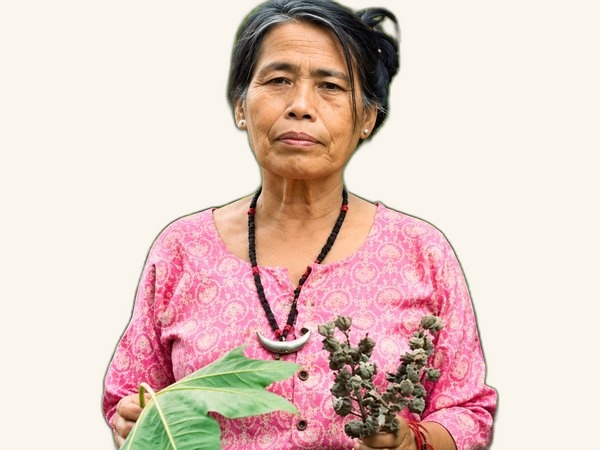
Yanung Jamoh Lego
“The Adi Queen of Herbs”
Herbalist · Founder, Indigenous Herbal Heritage
A master herbalist and plant conservationist from the Adi tribe of East Siang, Arunachal Pradesh. Over nearly three decades she has treated lakhs of patients with traditional herbal medicine and trained lakhs more to grow and use medicinal plants.
Dr. Sangthankima
“Mizoram’s shelter for the outcast”
Founder & Chairman · Thutak Nunpuitu Team (TNT)
A humanitarian from Mizoram who has devoted his life to sheltering orphans, rescuing people from substance abuse and caring for the destitute and mentally ill. Born in 1960 in Tlangsam village near Champhai, he built TNT into the state’s largest shelter network.
Prof. Harjeet Nath
“The inventor of the suitcase water purifier”
Assistant Professor · Tripura University
An innovator, chemical engineer and social entrepreneur born in 1989. After a B.Tech in Chennai and an M.Tech from NIT Rourkela, he joined Tripura University as a founding faculty member in Chemical & Polymer Engineering and built its first campus start-up.
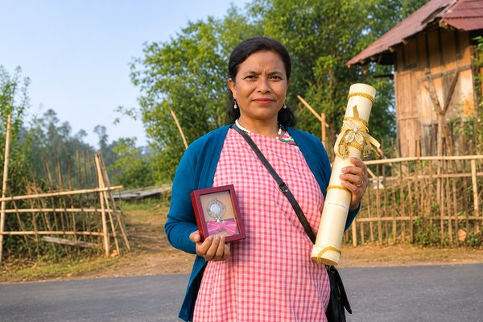
Trinity Saioo
“The Turmeric Queen of the Northeast”
Teacher & organic farmer · Founder, Leng Skhem Spice Society
A primary-school teacher, mother of six and agricultural reformer from the tribal village of Mulieh in West Jaintia Hills, Meghalaya. She organised over a thousand farmers to grow high-curcumin Lakadong turmeric, tripling incomes for smallholder tribal women.
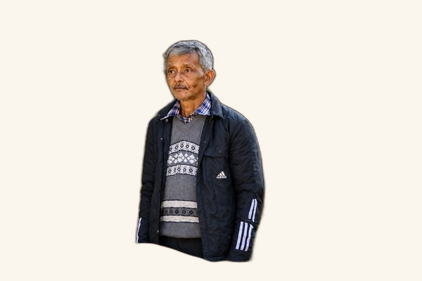
Hally War
“Bah Hally, keeper of the living root bridges”
Khasi farmer & bio-architect · Siej village, near Sohra
An indigenous Khasi farmer, master bio-architect and environmentalist from Meghalaya who has spent over half a century growing, guiding and preserving Jingkieng Jri — the living root bridges that draw visitors from across the world.
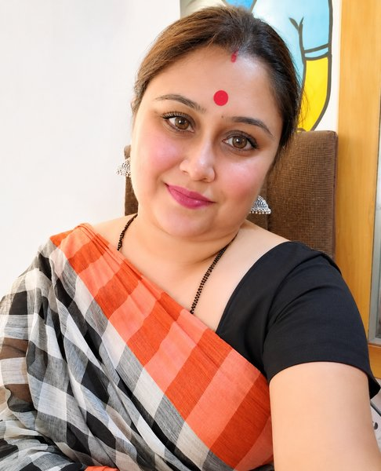
Ananya Paul Dodmani
“The tribal-rights educator who builds learning centres”
Founder & Trustee · Tribal Connect
A tribal-rights activist, criminal psychologist and grassroots educator who has spent over two decades uplifting, educating and healing marginalised indigenous communities across India. She was born and raised in Lumding, a multi-ethnic tribal town in Assam.
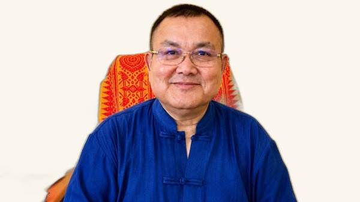
Dr. Jogesh Deuri
“The silk scientist of Assam”
Sericulturist · Department of Sericulture, Government of Assam
A pioneering sericulturist, silk scientist and public administrator who modernised Assam’s traditional sericulture, turning home-based silk farming into a structured, sustainable and thriving rural industry across more than 1,600 villages.
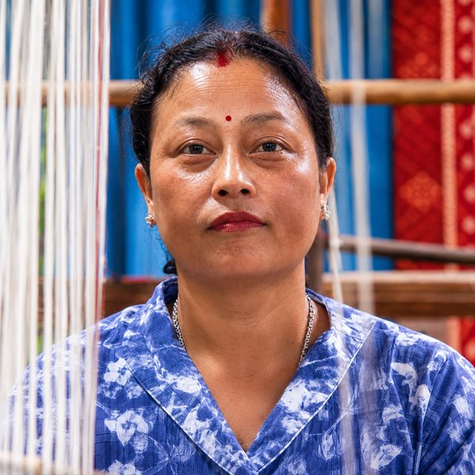
Shital Tamang
“Tribal weaving in the national spotlight”
Traditional handloom artisan · Upper Gom, South Sikkim
A master traditional weaver from the hills of South Sikkim whose craftsmanship and dedication to indigenous art forms have earned national acclaim. From Upper Gom in Namchi district, she keeps Lepcha weaving, natural dyes and Himalayan motifs alive.
Dr. Binish Desai
“Recycle Man of India”
Founder & Chairman, Eco Eclectic Technologies · Valsad
Environmental engineer who has turned 100+ waste streams into building materials — from cement-free P-Blocks to bricks made from recycled COVID masks.
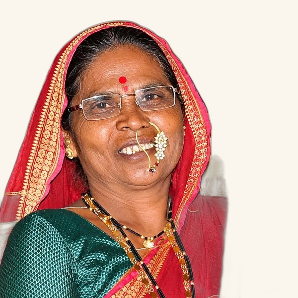
Rahibai Soma Popere
“Beej Mata” — Seed Mother of India”
Kalsubai Parisar Biyane Samvardhan Samiti · BAIF partner
An unlettered Mahadeo Koli farmer who turned her mud house into a living seed vault, saving native crops from hybrid-seed monopolies.
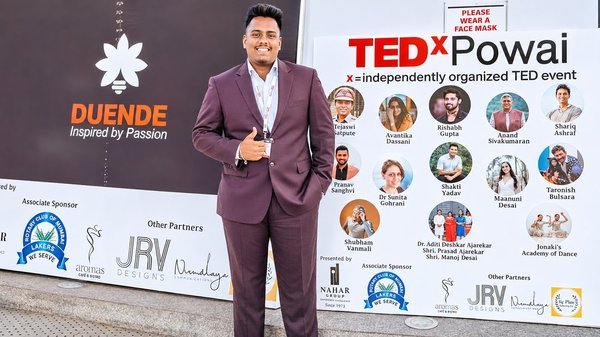
Shakti Yadav
“Bombae Bhai”
Buy Food with Plastic India Association · Bhandup, Mumbai
Raised in a Mumbai slum, he turned plastic bottles into currency — 20 bottles buy a hot meal, while the plastic is upcycled into products.
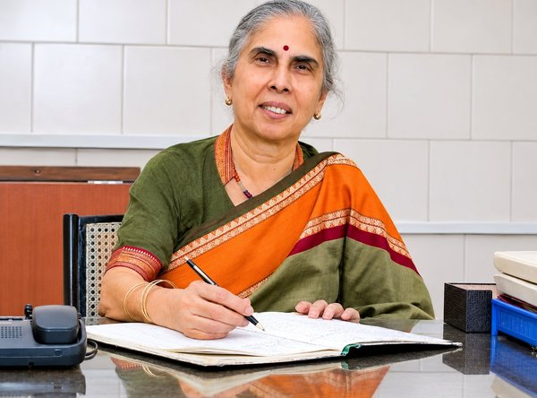
Dr. Armida Fernandez
“Mother of Asia’s First Human Milk Bank”
Founder Trustee, SNEHA · Former Dean, Sion Hospital
Saw premature babies dying for want of milk and built Asia’s first human milk bank in 1989, then founded SNEHA to take maternal and child health into the slums.
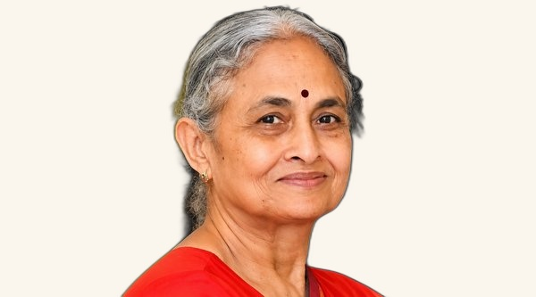
Dr. Rani Bang
“Pioneer of Home-Based Newborn Care”
Co-Founder & Director, SEARCH · Gadchiroli
Chose rural Gadchiroli over a city career; trained village women to treat newborn illness at home, a model that shaped India’s ASHA programme.
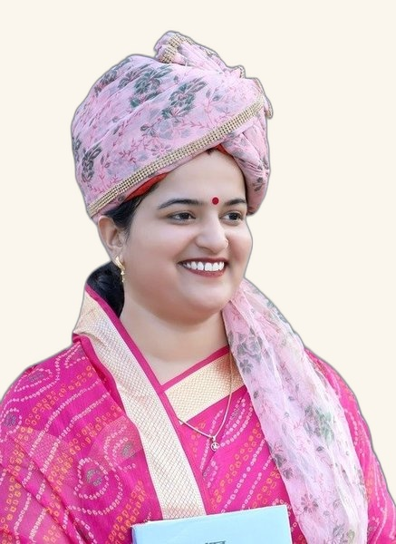
Neeru Yadav
“Hockey Wali Sarpanch”
Sarpanch, Lambi Ahir village · Jhunjhunu district
M.Sc. Mathematics graduate and first woman sarpanch of Lambi Ahir (2020) — she funded a girls’ hockey team, a women’s farmer company and a plastic-free utensil bank.
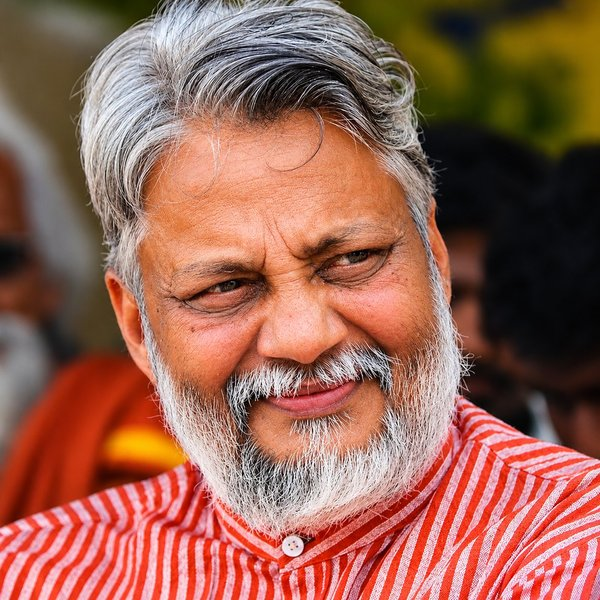
Rajendra Singh
“Waterman of India”
Founder & Chairman, Tarun Bharat Sangh · Alwar
Revived traditional johads and dead rivers across Rajasthan, bringing groundwater back and farmers home from the cities.
Lakshmi Murthy
“Inventor of the Uger Cloth Pad”
Jatan Sansthan · Vikalp Design · Project Uger
NID-trained designer who created a reusable cotton pad and deliberately left it patent-free, so village women’s groups can make and sell it.
Dr. Kriti Bharti
“India’s First Child Marriage Annuller”
Founder & Managing Trustee, Saarthi Trust · Rehabilitation psychologist
Secured India’s first court annulment of a child marriage in 2012 and has since helped void dozens more while preventing many others.
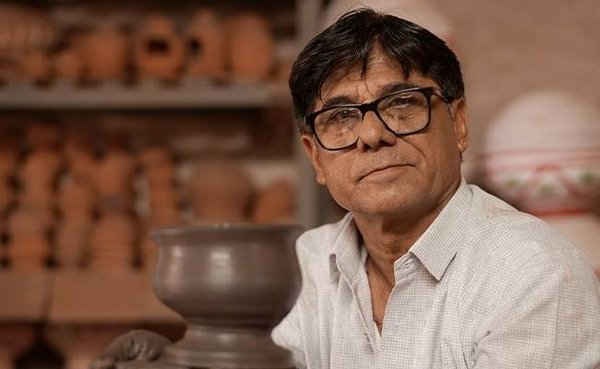
Mansukhbhai Prajapati
“The Clay Fridge Inventor”
Founder & MD, Mitticool Clay Creation · Wankaner
A potter’s son who, after the 2001 Bhuj earthquake, engineered Mitticool — a zero-electricity terracotta refrigerator — and turned a dying craft into India’s first ISO-certified grassroots enterprise.
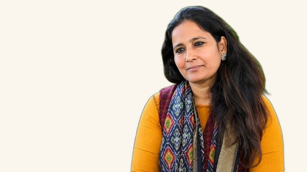
Mittal Patel
“Voice of the Nomadic Tribes”
Founder & Managing Trustee, VSSM · Ahmedabad
Gave up civil-services plans to found VSSM in 2006, securing identity, housing and schooling for 28+ nomadic and denotified tribes of Gujarat.
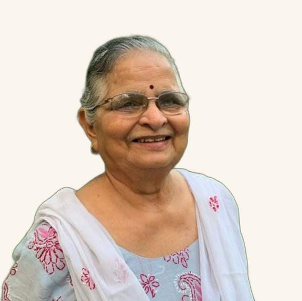
Dr. Lata Desai
“Healer of Tribal Gujarat”
Co-Founder & Trustee, SEWA Rural · Jhagadia
A paediatrician who left a US career to co-found SEWA Rural in 1980, building a hospital network that cut maternal mortality by 75% across tribal villages.
Dr. Jayantkumar Maganlal Vyas
“Builder of a Forensic University”
Vice-Chancellor, National Forensic Sciences University · Gandhinagar
Joined forensic science in 1973, turned Gujarat’s state lab into a world-class complex and founded the university now an Institution of National Importance.
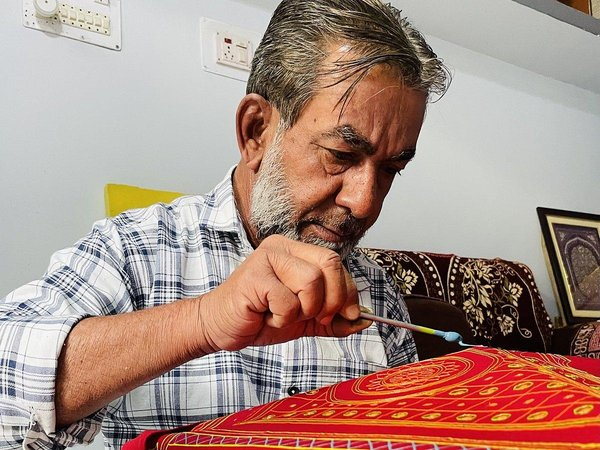
Abdul Gafur Khatri
“Saviour of a 400-Year-Old Craft”
Master Artisan, Traditional Rogan Art Studio · Nirona, Kutch
From the last family practising Rogan painting, he rescued the Persian craft from extinction, won its GI tag and opened training to women in 2010.
Nilesh Mandlewala
“Organ Man of India”
Founder & President, Donate Life · Surat
Built cadaveric organ-donation protocols across Gujarat’s hospitals, giving life and sight to more than 1,270 recipients.
Murlikant Petkar
“India’s First Paralympic Gold Medallist”
Paralympic swimmer · Former Indian Army soldier
Wounded in the 1965 war while serving in the Indian Army, he turned to swimming and, in 1972 at Heidelberg, won India’s first-ever Paralympic gold in the 50 m freestyle with a world record. His story inspired the 2024 film Chandu Champion.
Dr. Asmita Prabhune
“Creator of ‘Sophab’ Produce Wash”
Co-Founder & Director, Green Pyramid Biotech · Pune
After 34 years as a CSIR-NCL scientist, she spent five years developing Sophab, a natural wash that removes pesticide residues from fruits and vegetables.
Prof. Deepak Dhar
“First Indian Boltzmann Medallist”
Distinguished Emeritus Professor, IISER Pune
Solved the Abelian Sandpile Model in 1990, a cornerstone of self-organised criticality now used across physics, computing and economics.
Dr. Abhay Bang
“Pioneer of Home-Based Newborn Care”
Founder & Director, SEARCH · Gadchiroli
With Dr. Rani Bang, he built a village-based newborn-care model that was adopted into India’s national health policy.
D. R. Mehta
“Free Limbs for 2.5 Million+”
Founder, BMVSS (Jaipur Foot) · Jaipur
Founded BMVSS in 1975, growing it into the world’s largest provider of free artificial limbs and mobility aids, and co-developed the $20 Jaipur Knee.
Prof. Shyam Sunder Jyani
“Trees as Family Members”
Associate Professor of Sociology, Dungar College · Bikaner
Founded the ‘Familial Forestry’ movement, which treats trees as living members of the household and greens the desert one family at a time.
Usha Chaumar
“From Scavenger to Sulabh President”
President, Sulabh International Social Service Organisation
Born into a family of manual scavengers, she left the work in 2003 and now leads Sulabh’s social service arm, helping other women escape it.
Gulabo Sapera
“Global Ambassador of Kalbelia”
Folk Dancer & Cultural Ambassador · Pushkar, Jaipur
Born into a nomadic snake-charmer community, she took Kalbelia dance from the Rajasthan desert to stages in more than 165 countries.
Mahavir Singh Phogat
“The Coach Behind Dangal”
Dronacharya Awardee · Wrestling coach, Balali akhara
Former wrestler who left his job to train daughters Geeta and Babita, and nieces Vinesh and Priyanka, transforming women’s wrestling; the film Dangal tells his story.
Bachendri Pal
“First Indian Woman on Mount Everest”
Former Chief, Adventure Programmes, Tata Steel · Co-founder, WANI
Villager from Nakuri who stood on Everest on 23 May 1984, then led the all-women 1993 Indo-Nepalese expedition that put seven women on the summit.
Manu Bhaker
“India’s Double Olympic Medallist”
Pistol shooter · Indian Olympian
Pistol ace who bounced back from a Tokyo 2020 malfunction to win two bronzes at Paris 2024, India’s first athlete with two medals at one Games since Independence.
Rahul Jain
“Pioneer of business coaching in India”
Founder Director · Business Coaching India LLP
He started Business Coaching India in 2004 and introduced structured business coaching to the country. His programmes help entrepreneurs and MSME owners build systems-driven businesses that double profits while working just one day a week.
Abhishek Ray
“Composer Who Rewilded a Hill”
Founder, Sitabani Wildlife Reserve · Music Composer
Bollywood composer who bought a barren hill beside Corbett National Park, replanted it with native trees and water sources, and made it protected habitat for tigers, leopards and black bears.
Dr. Chandrakant Sambhaji Pandav
“The Iodine Man of India”
Former Professor & Head, Centre for Community Medicine · AIIMS, New Delhi
A community-medicine physician who spent decades on a hidden hunger: iodine deficiency. As a WHO and UNICEF consultant and South Asia coordinator of the Iodine Global Network, he helped drive universal salt iodisation in India.
कोई परिणाम नहीं मिला
आपके द्वारा खोजे गए शब्द या चुने गए फ़िल्टर के अनुसार कोई राष्ट्र निर्माता नहीं मिला। कृपया फ़िल्टर रीसेट करें।